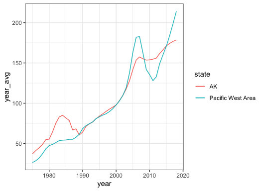
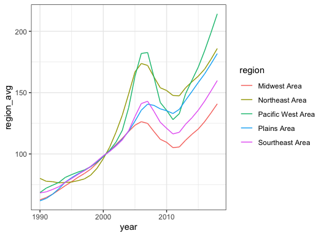

The goal of yang7er is to calculating the difference between state and regional hpi, as well as graphing the change in state hpi, and the change in regional hpi.
Installation
You can install the development version of yang7er from GitHub with:
# install.packages("devtools")
devtools::install_github("etc5523-2022/rpkg-yang7er")Example
This is a basic example which shows you how to solve a common problem:
1.get_hpi
If you want to check the build-in data, you can use:
get_hpi()
#> Rows: 26877 Columns: 5
#> ── Column specification ────────────────────────────────────────────────────────
#> Delimiter: ","
#> chr (1): state
#> dbl (4): year, month, price_index, us_avg
#>
#> ℹ Use `spec()` to retrieve the full column specification for this data.
#> ℹ Specify the column types or set `show_col_types = FALSE` to quiet this message.
#> Joining, by = "state"
#> # A tibble: 26,877 × 9
#> # Groups: year, region [220]
#> year month state price_index us_avg year_avg us_year_avg region regio…¹
#> <dbl> <dbl> <chr> <dbl> <dbl> <dbl> <dbl> <chr> <dbl>
#> 1 1975 1 AK 34.6 23.5 37.2 24.2 Pacific We… 26.4
#> 2 1975 2 AK 35.1 23.6 37.2 24.2 Pacific We… 26.4
#> 3 1975 3 AK 35.5 23.8 37.2 24.2 Pacific We… 26.4
#> 4 1975 4 AK 35.9 24.1 37.2 24.2 Pacific We… 26.4
#> 5 1975 5 AK 36.3 24.2 37.2 24.2 Pacific We… 26.4
#> 6 1975 6 AK 36.7 24.2 37.2 24.2 Pacific We… 26.4
#> 7 1975 7 AK 37.2 24.3 37.2 24.2 Pacific We… 26.4
#> 8 1975 8 AK 37.7 24.4 37.2 24.2 Pacific We… 26.4
#> 9 1975 9 AK 38.4 24.5 37.2 24.2 Pacific We… 26.4
#> 10 1975 10 AK 39.1 24.6 37.2 24.2 Pacific We… 26.4
#> # … with 26,867 more rows, and abbreviated variable name ¹region_avg2.diff_region_state
If you want to get the information of Ak, in 2006, you can use:
diff_region_state("AK",2016)
#> # A tibble: 1 × 6
#> # Groups: state, year [1]
#> year state region region_avg state_avg diff
#> <dbl> <chr> <chr> <dbl> <dbl> <dbl>
#> 1 2016 AK Pacific West Area 184. 174. 9.833.diff_plot
If you want to plot the AK's hpi change, and compare with its region’s change, you can use:
diff_plot("AK")
4.regions_plot
If you want to plot regions’ hpi change from 1990 to 2018, you can use:
regions_plot(1990,2018)